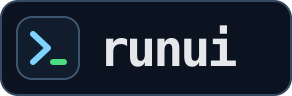
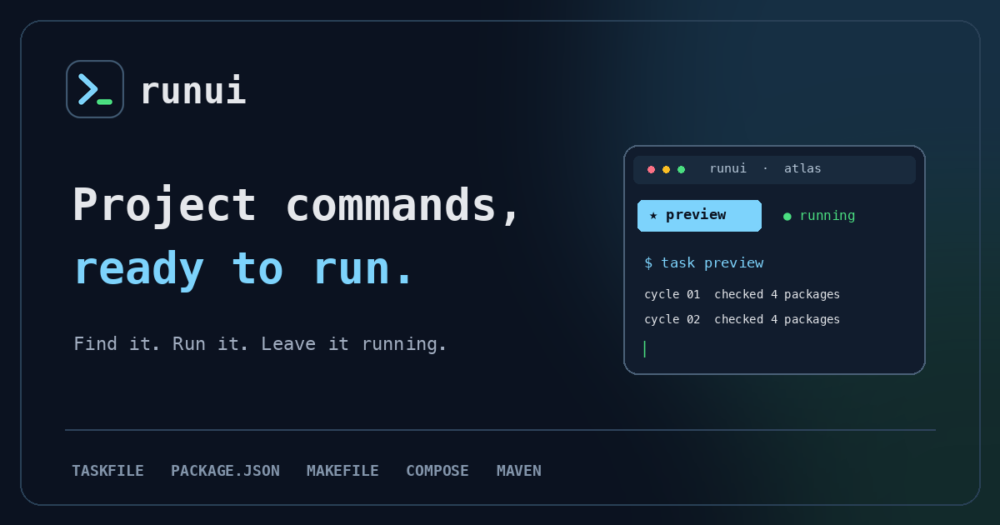

RUNUI / VISUAL IDENTITY
Small mark.
Long-running work.
A terminal prompt points forward. The green cursor stays put, just like a command that keeps running after you leave runui. The mark uses the same sky and green as the interface.
Logo preview

PRIMARY LOCKUP / DARKTHE MARK
Recognizable at a glance
The rounded tile holds the prompt and cursor together, so it works as a favicon, app icon, avatar, or small badge. Keep the tile intact; its dark field gives the mark contrast on light and dark surfaces.
 128 px64 px
128 px64 pxPALETTE
Straight from the TUI
The brand's two bright colors are already used by runui to show focus and a healthy running state. The rest of the palette keeps screenshots, docs, and assets quiet around them.
#0B1220base#7DD3FCprompt / focus#4ADE80cursor / running#E5E7EBprimary text#A2AEC1supporting textFILES
Ready to use
The SVG files are the source artwork. The PNG and ICO exports cover browser tabs, touch icons, launcher art, and sharing. They are generated by scripts/build-brand-assets.py.



USAGE
A few simple rules
Use the full logo when there is room
README headers, landing pages, and social art get the horizontal lockup. Use the mark alone in compact places.
Give it some air
Leave at least a quarter of the mark's width clear around it. Keep its proportions and corners.
Keep the color meanings
Sky is the prompt and active focus; green is the cursor and a running command. Avoid swapping them.
The wordmark uses a bold monospace face (Menlo with a DejaVu Sans Mono fallback). The docs use the system sans-serif for long text. No font files or web requests are needed.